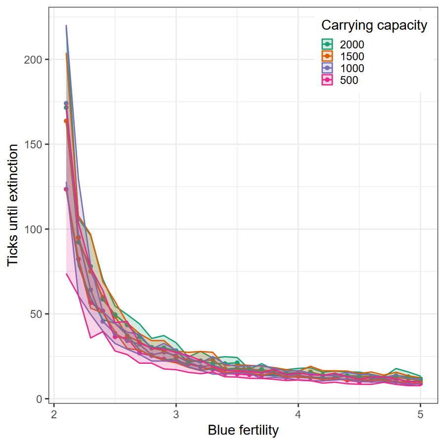

Homework assigned for Thursday, October 3 is cancelled.
Homework 8.1, 8.2

max-one-of [ expected-utility ] patches
max-one-of [ expected-utility ] neighbors
max-one-of [expected-utility ] patches in-radius 5
max-one-of [ expected-utility ] my-social-network
Social Networks and Links
create-link-from,create-link-to) or undirected (create-link-with)my-links,my-in-links,my-out-linksreport agent-sets of links connected to a turtlelink-neighbors,out-link-neighbors,in-link-neighborsreport agent-sets of turtles connected to a turtle.